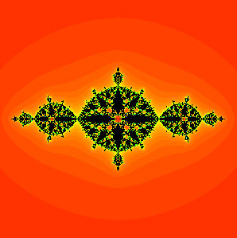
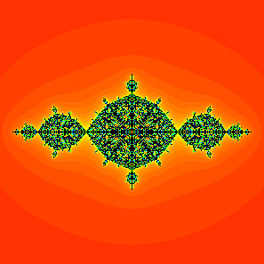
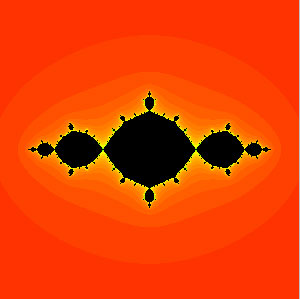
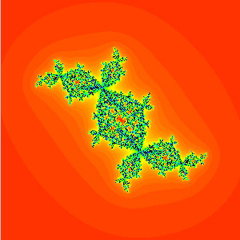
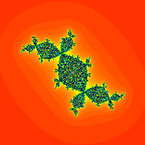
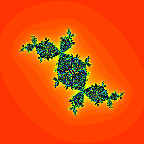
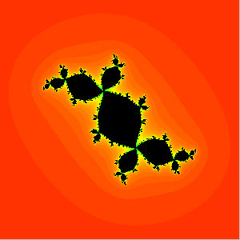

Julia Sets of Special Rational Maps
Julia sets are the chaotic domain of iterated complex functions that map the complex plane to itself. Notice the fractal structure of the boundary of the colored region—this boundary is the Julia set! For the following two functions as λ goes to zero the Julia set becomes a space-filling fractal curve giving a better and better approximation of the λ=0 case (in the Hausdorff sense).
Perturbed Basilica
f(z) = z² − 1 + λ/z²
λ = 0.1

λ = 0.01

λ = 0.001

Basilica
λ = 0
Perturbed Douady Rabbit
f(z) = z² + (−0.123 + 0.745i) + λ/z²

λ = 0.01

λ = 0.001

λ = 0.0001

Douady Rabbit
λ = 0
Learn More
You can read more about the dynamics of these particular maps here (accessible to undergraduates) and here (advanced). For some accessible background and interactive media on complex dynamics, take a look at the Mandelbrot Set Explorer and Bob Devaney's webpage.